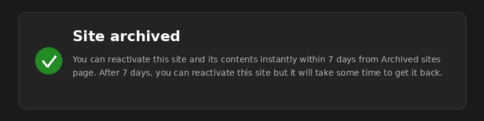

A field report from a real-world cleanup operation in the 365Solution AG tenant (name pseudonymized).
How a SharePoint Archiving Project Went to Hell and Back
It started as a routine engagement: archive a SharePoint site that had been retired after an organizational restructuring. The site was tied to a Microsoft Teams team with 10 Private Channels, each with its own independent SharePoint site underneath. Simple enough on paper.
The team was deleted. The M365 Group was removed. The archive confirmation appeared in the SharePoint Admin Center. Job done — or so I thought.
Weeks later, during a tenant health audit, I noticed ten SharePoint sites still sitting there. Alive. Consuming storage. Owned by nobody. The parent Group? 404 Not Found in Microsoft Graph. The Teams Admin Center? Blank. These Private Channel sites had become ghost towns — orphaned when the parent Group disappeared, but never cleaned up because Microsoft deliberately prevents GUI deletion of channel sites.
What followed was a journey through every tooling trap in the M365 PowerShell universe: macOS auth bugs, PnP assembly conflicts, deprecated cmdlets, and a Modern Auth popup that vanished into the Z-order. This post honestly documents every dead end, because the path to the solution is just as instructive as the solution itself.
TL;DR
A Microsoft 365 Group and its associated Team had vanished from the directory, but ten Private Channel SharePoint sites remained as ghost towns. Microsoft Graph: 404. Entra Portal: nothing. Teams Admin Center: blank. SharePoint Admin Center GUI: visible, but impossible to delete. The solution? Firing up the SharePoint Online Management Shell, filtering specifically via Get-SPOSite -Template "TEAMCHANNEL#1", deleting them, and sweeping the Recycle Bin.
1. The Starting Point
During a tenant cleanup, I encountered an orphaned Microsoft 365 Group:
GroupId: d9e8b533-ef91-44df-8d85-46ff1730404f(The GUID was already gone from the tenant — I'm only listing it here because it references nothing and is useless to anyone.)
Initial diagnosis via Microsoft Graph:
GET https://graph.microsoft.com/v1.0/groups/d9e8b533-ef91-44df-8d85-46ff1730404f
→ 404 Not Found
GET https://graph.microsoft.com/v1.0/teams/d9e8b533-ef91-44df-8d85-46ff1730404f
→ 404 Not FoundHowever, in the SharePoint Admin Center, there were ten sites with the URL pattern /sites/LEE-<Department> and the telltale template TEAMCHANNEL#1. These are Private Channel sites — independent SPO sites, but logically bound to the parent Group. When the Group disappears, they remain as ghost sites.
GUI attempts in the SharePoint Admin Center? Sites cannot be selected, because Microsoft intentionally blocks the individual deletion of channel sites. Teams Admin Center? Doesn't show the team at all anymore. A classic dead end.
2. First Attempt: macOS + PnP.PowerShell
My daily driver is a Mac, so the obvious attempt:
Install-Module PnP.PowerShell -Scope CurrentUser
Connect-PnPOnline -Url https://365solution-admin.sharepoint.com -InteractiveResult: Null Reference Exception in the auth layer. A known issue with PnP on macOS in combination with certain Conditional Access policies (a Zero Trust configuration with a device filter reliably triggers a bug in the auth handler).
Workaround attempt with -DeviceLogin: same NRE. Interim result: macOS path blocked.
→ Decision: switch over to a Windows VM.
3. Second Attempt: Windows + Classic SPO Module
On Windows PowerShell 5.1:
Install-Module Microsoft.Online.SharePoint.PowerShell -Scope CurrentUser -Force -AllowClobber
Import-Module Microsoft.Online.SharePoint.PowerShell
Connect-SPOService -Url https://365solution-admin.sharepoint.comResult:
Connect-SPOService: No valid OAuth 2.0 authentication session existsNo browser popup, no Modern Auth prompt. Classic case: the popup was swallowed somewhere in the Z-order, or the Modern Auth negotiation didn't trigger at all.
Workaround attempt:
Connect-SPOService -Url https://365solution-admin.sharepoint.com `
-ModernAuth $true `
-AuthenticationUrl https://login.microsoftonline.com/organizationsDidn't help reliably. So: next try with PnP.PowerShell on Windows.
4. Third Attempt: Windows + PnP.PowerShell — The Assembly Inferno
Install-Module PnP.PowerShell -Scope CurrentUser -Force -AllowClobberError:
Install-Package: A Microsoft-signed module named 'PnP.PowerShell' with version
'3.1.0' that was previously installed conflicts with the new module
'PnP.PowerShell' from publisher '...' with version '3.2.0'.OK, set -SkipPublisherCheck, reinstall. Then:
Import-Module PnP.PowerShell
Import-Module: Could not load file or assembly
'Microsoft.Online.SharePoint.Client.Tenant, Version=16.1.0.0, ...'.
The located assembly's manifest definition does not match the assembly reference.
(0x80131040)Cause: Two PnP versions sitting in the same user profile in parallel (3.1.0 and 3.2.0). The DLLs from one module folder reference CSOM assemblies in a version that the other module folder has already loaded in a different version. The .NET AppDomain pins the first loaded version — switching within the same session is not possible.
Cleanup:
Get-Module PnP.PowerShell | Remove-Module -Force
Get-InstalledModule PnP.PowerShell -AllVersions | Uninstall-Module -Force
Remove-Item "$HOME\Documents\PowerShell\Modules\PnP.PowerShell" `
-Recurse -Force -ErrorAction SilentlyContinue
Remove-Item "$HOME\Documents\WindowsPowerShell\Modules\PnP.PowerShell" `
-Recurse -Force -ErrorAction SilentlyContinueReinstallation in a new PS7 session (important — otherwise the old assembly still lives on in the AppDomain):
Install-Module PnP.PowerShell -Scope CurrentUser -Force -SkipPublisherCheck
Import-Module PnP.PowerShell
(Get-Module PnP.PowerShell).Version
# 3.2.0Login attempt:
Register-PnPManagementShellAccess
The term 'Register-PnPManagementShellAccess' is not recognized as a name of a cmdlet...Oh right — the cmdlet was removed in PnP.PowerShell 2.x. Microsoft withdrew the central "PnP Management Shell" multi-tenant app for security reasons (overly broad, pre-granted permissions for every tenant worldwide). Since then, every tenant needs its own app registration for PnP.
The correct way in PnP 3.x:
Register-PnPEntraIDAppForInteractiveLogin `
-ApplicationName "PnP Mgmt 365Solution" `
-Tenant 365solution.onmicrosoft.com `
-InteractiveWorks — but is overkill for a one-time cleanup job. So: back to basics.
5. Back to Basics: SPO Module, Done Right
New Windows PowerShell 5.1 window (not pwsh 7 — the old SPO module explicitly wants .NET Framework). Important: the module must be in the 5.1 module path (Documents\WindowsPowerShell\Modules), not in the 7 path (Documents\PowerShell\Modules):
Install-Module Microsoft.Online.SharePoint.PowerShell -Scope CurrentUser -Force -AllowClobber
Import-Module Microsoft.Online.SharePoint.PowerShell
Connect-SPOService -Url https://365solution-admin.sharepoint.comThis time the Modern Auth popup appeared (maybe it was stuck under another window before). Login with the Admin account (SharePoint Administrator role activated via PIM), MFA confirmation, done.
6. Discovery: Which Sites Are Really Orphaned?
The trick lies in the Template filter and the GroupId:
Get-SPOSite -Limit All -Template "TEAMCHANNEL#1" |
Where-Object { $_.Url -match '/sites/LEE' } |
Select-Object Url, Template, GroupId |
Format-Table -AutoSizeOutput:
| Url | Template | GroupId |
|---|---|---|
| https://365solution.sharepoint.com/sites/LEE-Hauswirtschaft | TEAMCHANNEL#1 | 00000000-0000-... |
| https://365solution.sharepoint.com/sites/LEE-Praxisanleitung | TEAMCHANNEL#1 | 00000000-0000-... |
| https://365solution.sharepoint.com/sites/LEE-Pflege | TEAMCHANNEL#1 | 00000000-0000-... |
| https://365solution.sharepoint.com/sites/LEE-Pflegedienstleitung | TEAMCHANNEL#1 | 00000000-0000-... |
| https://365solution.sharepoint.com/sites/LEE-Kueche | TEAMCHANNEL#1 | 00000000-0000-... |
| https://365solution.sharepoint.com/sites/LEE-Haustechnik | TEAMCHANNEL#1 | 00000000-0000-... |
| https://365solution.sharepoint.com/sites/LEE-SozialerDienst | TEAMCHANNEL#1 | 00000000-0000-... |
| https://365solution.sharepoint.com/sites/LEE-Einrichtungsleitung | TEAMCHANNEL#1 | 00000000-0000-... |
| https://365solution.sharepoint.com/sites/LEE-Verwaltung | TEAMCHANNEL#1 | 00000000-0000-... |
| https://365solution.sharepoint.com/sites/LEE-Personal | TEAMCHANNEL#1 | 00000000-0000-... |
The empty GroupId (00000000-...) is the smoking gun: a Channel site with a living parent Group would show the parent's GUID here. Null = orphaned. Exactly the ten expected sites.
7. The Actual Cleanup
# 1. Collect
$lee = Get-SPOSite -Limit All -Template "TEAMCHANNEL#1" |
Where-Object { $_.Url -match '/sites/LEE' }
# 2. Sanity check
$lee | Select-Object Url | Format-Table -AutoSize
Read-Host "ENTER to delete, Ctrl+C to abort"
# 3. Delete (moves to the Tenant Recycle Bin)
foreach ($s in $lee) {
try {
Remove-SPOSite -Identity $s.Url -Confirm:$false -NoWait
Write-Host "DEL queued: $($s.Url)" -ForegroundColor Green
} catch {
Write-Host "FAIL: $($s.Url) -> $($_.Exception.Message)" -ForegroundColor Red
}
}-NoWait is important — without it, each site waits up to several minutes while SPO flips the flag in the backend. With -NoWait, the call queues the operation and returns immediately.
8. Recycle Bin: The Second, Often Forgotten Step
If the Group is really supposed to disappear from the tenant permanently, the Tenant Recycle Bin must also be emptied:
# Which sites are in the Tenant Recycle Bin?
Get-SPODeletedSite -Limit All |
Where-Object { $_.Url -match '/sites/LEE' } |
Select-Object Url |
Format-Table -AutoSize
# Remove permanently
Get-SPODeletedSite -Limit All |
Where-Object { $_.Url -match '/sites/LEE' } |
ForEach-Object { Remove-SPODeletedSite -Identity $_.Url -Confirm:$false }Default retention in the Tenant Recycle Bin: 93 days. If you don't actively empty it, the "corpses" are no longer active but remain part of the storage quota and potentially block URL reuse.
9. Verify
# Active sites - must be empty
Get-SPOSite -Limit All -Template "TEAMCHANNEL#1" |
Where-Object { $_.Url -match '/sites/LEE' }
# Recycle Bin - must be empty
Get-SPODeletedSite -Limit All |
Where-Object { $_.Url -match '/sites/LEE' }Both calls came back empty. Final Graph check on the original Group ID:
GET https://graph.microsoft.com/v1.0/directory/deletedItems/microsoft.graph.group/d9e8b533-...
→ 404 Not FoundNo soft-delete entry, no remnants. Tenant clean.
10. Lessons Learned
Tooling Reality in M365 PowerShell
| # | Lesson |
|---|---|
| 1 | Three competing modules for SPO Admin (Microsoft.Online.SharePoint.PowerShell, PnP.PowerShell, Microsoft.Graph), each with its own quirks, auth patterns, and platform restrictions. |
| 2 | Module version drift is the most common source of errors. Mixing versions in the same session = guaranteed Assembly Load Failure. Golden rule: one version, one session. If unsure → new session. |
| 3 | PowerShell 5.1 vs. 7 is a real trap. Different module paths: Documents\WindowsPowerShell\Modules for 5.1, Documents\PowerShell\Modules for 7. Install in one, import from the other → CommandNotFoundException. |
| 4 | macOS support for M365 Admin PowerShell is still second league. For productive tenant operations, Windows remains the more reliable platform — even in 2026. |
M365 Groups & Teams Lifecycle
| # | Lesson |
|---|---|
| 5 | Private Channels are independent SharePoint sites. Hard-delete a Group without dissolving channels first = guaranteed ghost sites. |
| 6 | GUI paths protect against inconsistency — at the price of freedom of movement. Microsoft deliberately blocks individual deletion of channel sites in the Admin Center. In a cleanup scenario, PowerShell is the only way out. |
| 7 | Graph 404 does not mean "gone" — it means "no longer referenced in the directory." The associated SPO sites can happily live on regardless. |
Detection: Finding Orphaned Channel Sites
A simple, repeatable detection check for any tenant:
# All Channel sites with empty GroupId = orphaned
Get-SPOSite -Limit All -Template "TEAMCHANNEL#1" |
Where-Object { $_.GroupId -eq [Guid]::Empty } |
Select-Object Url, StorageUsageCurrent, LastContentModifiedDate |
Sort-Object LastContentModifiedDate |
Format-Table -AutoSizeRun this once a month as a Scheduled Task or Azure Automation Runbook → you catch orphaned sites before they pile up.
11. Complete Script to Take Away
<#
.SYNOPSIS
Cleanup orphaned Teams Private-Channel SharePoint sites.
.DESCRIPTION
Identifies Channel sites whose parent M365 Group no longer exists,
deletes them, and clears them from the SPO Tenant Recycle Bin.
.NOTES
Requires: Windows PowerShell 5.1
Microsoft.Online.SharePoint.PowerShell module
SharePoint Administrator role (recommended via PIM)
#>
param(
[Parameter(Mandatory=$true)]
[string]$AdminUrl,
[Parameter(Mandatory=$true)]
[string]$UrlFilterRegex,
[switch]$WhatIfMode
)
Import-Module Microsoft.Online.SharePoint.PowerShell -ErrorAction Stop
Connect-SPOService -Url $AdminUrl
# Discovery
$orphans = Get-SPOSite -Limit All -Template "TEAMCHANNEL#1" |
Where-Object {
$_.Url -match $UrlFilterRegex -and
$_.GroupId -eq [Guid]::Empty
}
if (-not $orphans) {
Write-Host "No orphaned channel sites matched filter '$UrlFilterRegex'." `
-ForegroundColor Yellow
return
}
Write-Host "`nFound $($orphans.Count) orphaned channel site(s):" -ForegroundColor Cyan
$orphans | Select-Object Url, StorageUsageCurrent, LastContentModifiedDate |
Format-Table -AutoSize
if ($WhatIfMode) {
Write-Host "`n[WhatIf] No changes performed." -ForegroundColor Yellow
return
}
$answer = Read-Host "`nProceed with deletion + recycle-bin purge? (yes/NO)"
if ($answer -ne 'yes') { Write-Host "Aborted."; return }
# Delete (moves to recycle bin)
foreach ($s in $orphans) {
try {
Remove-SPOSite -Identity $s.Url -Confirm:$false -NoWait
Write-Host "DEL queued: $($s.Url)" -ForegroundColor Green
} catch {
Write-Host "FAIL: $($s.Url) -> $($_.Exception.Message)" -ForegroundColor Red
}
}
Start-Sleep -Seconds 30
# Purge from recycle bin
Get-SPODeletedSite -Limit All |
Where-Object { $_.Url -match $UrlFilterRegex } |
ForEach-Object {
try {
Remove-SPODeletedSite -Identity $_.Url -Confirm:$false
Write-Host "PURGED: $($_.Url)" -ForegroundColor Green
} catch {
Write-Host "PURGE FAIL: $($_.Url) -> $($_.Exception.Message)" `
-ForegroundColor Red
}
}
# Verify
Write-Host "`n--- Verify ---" -ForegroundColor Cyan
Get-SPOSite -Limit All -Template "TEAMCHANNEL#1" |
Where-Object { $_.Url -match $UrlFilterRegex } |
Select-Object Url
Get-SPODeletedSite -Limit All |
Where-Object { $_.Url -match $UrlFilterRegex } |
Select-Object UrlUsage:
# Dry run first
.\Cleanup-OrphanedChannelSites.ps1 `
-AdminUrl https://365solution-admin.sharepoint.com `
-UrlFilterRegex '/sites/LEE' `
-WhatIfMode
# If the list looks correct, run for real
.\Cleanup-OrphanedChannelSites.ps1 `
-AdminUrl https://365solution-admin.sharepoint.com `
-UrlFilterRegex '/sites/LEE'12. Conclusion
What should have been a trivial cleanup turned into a scavenger hunt thanks to three tooling friction points: a macOS auth bug, a PnP version conflict, and a deprecated cmdlet. The actual solution in the end? Five cmdlets. Five minutes.
Anyone who regularly deals with lifecycle inconsistencies in an M365 tenant should set up exactly this detection filter (Template=TEAMCHANNEL#1 + GroupId=Empty) as a recurring monitor — orphaned channel sites are far more common than you'd expect.
Happy hunting.
Pseudonymization: Tenant name, domain, and all GUIDs are anonymized or belong to no longer existing objects. The procedure and cmdlet sequence correspond 1:1 to the real deployment.
